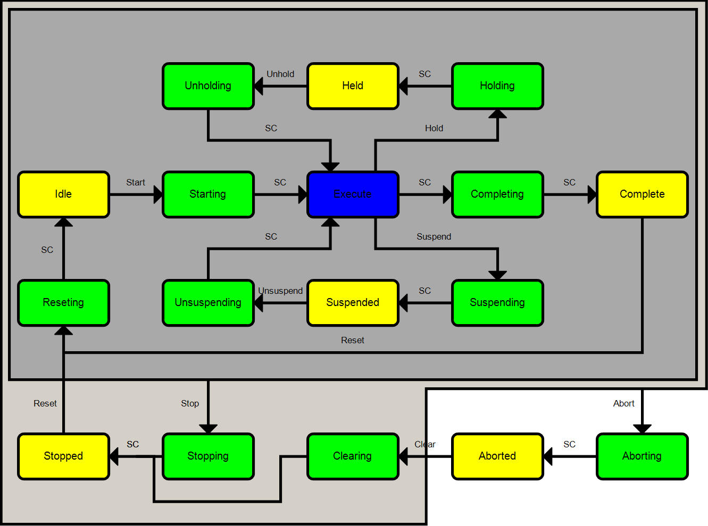

PackML Overview
What is PackML?
According to the OMAC website - PackML is an automation standard developed by the OMAC and adopted by ISA as TR88.00.02 that makes it easier to transfer and retrieve consistent machine data. The primary goals of PackML are to encourage a common look and feel across a plant floor, and to enable and encourage industry innovation.
What are the building blocks of PackML?

Machine Module, Equipment Modules, and Components
A manufacturing line will consist of multiple machines; for our purposes, a machine is defined by the presence of a single PLC. Each machine is made up of 0 or more equipment modules. Most machines will contain several equipment modules, but it is important to understand that a machine does not have to have any equipment modules. An equipment module is typically recognized by a single process of a machine. This could be some sort of de-stacker or infeed, a bag filler, or a palletizing system. Each equipment module is made up of components. These components are typically the hardware that work together as a single piece of equipment on the machine. For example, the cylinders, valves, and heating elements required to seal a bag, or the servo motors and actuators within a section of a distribution conveyor.
What are the Modes defined by PackML?
The PackML standard defines 4 modes, but also allows for the user to define their own. The defined modes are Invalid, Production, Maintenance, and Manual. A complete machine can be developed with only the use of the Production Mode. However, the other modes can be used to best describe the group of possible states. It could be that a Manual Mode does not include the Suspended and Held paths, and the Maintenance Mode includes the Held path but not the Suspended path. These choices are completely left to the developer and how they choose to design the machine. There are a total of 32 possible modes, these can be used for a variety of scenarios such as a test mode that has a defined Complete command to leave the Execute state after a test is completed, or a warmup mode could be created to keep the machine in the Execute state until its ready.
What is the PackML state machine?
PackML defines modes of operation and the possible states within each mode. A complete machine can be developed using only the production mode. The states are grouped into areas defined by their functionality. Typically, a machine will power on and go through the Aborting state to Aborted, these same states can be used for fault handling. Understanding the diagram and the areas is important. When a machine is in Execute there are four possible paths. A Suspend command will be issued when an upstream or downstream dependency is not met. This could be the previous Equipment module has run out of material or possibly faulted. The other 3 paths are Hold, Abort, and Stop. The Hold and Stop commands are issued by the operator, while the Abort command is given by the code. There are two types of states, Acting and Wait. The ing states are the Acting states. Aborting, Clearing, Stopping, Holding, etc. These states are entered because a command was given to do so. An Estop might cause an Abort command to be issued that will place the state machine into Aborting, or when the operator presses the Start button the command will be given for the state machine to move to the Starting state. Each of these acting states is followed by a StateComplete that is determined by the code and then transitions to a Wait state such as Stopped, Idle or Held. The Execute state is the exception to this as it is defined as an Acting state, but uses the StateComplete of the Starting state to enter and requires a command to leave.


Changing modes can only be done in certain states. Stopped, Aborted, Completed, and Held. If a mode change is required the machine must be in one of the states, and the mode that is being requested must also have this state. And while the states available within a mode can be defined there are a minimum set of required states that every mode must support. Aborted, Stopped, Idle, and Execute. Of these states only Aborted and Stopped allow for a mode change.
Deciding which states are needed
It is not required that all states be called from the machine module or submodule. For example, if a submodule has no work to perform in the Clearing state, then there is no need to call that method. When designing the architecture of the code it will be important to define which states are required for each submodule. Once the states have been decided and the functionality that will exist in each state defined then the methods can be added to override the methods of the base class.
Custom Modes
A common argument on why not to use TR88.00.02 is often stated, theres too much theres too many states and I dont need all of them. There are too many states, too many tags and either I have a lot of other modes, or only one mode of operation. A feature of TR88.00.02 that is often overlooked is custom modes. Theres a minimum set of tags, and a minimum set of states. This is intended by the standard to make the system as lightweight as possible.
My layout starts like this and lets see what we can remove

To determine what modes are necessary we can start asking questions
Is Complete required?
Is there a situation where I have multiple items in process need to run out before stopping?
No this machine operates on one item at a time, its either empty or has one.
OK get rid of completing and complete they make no sense
Do I need suspend?
Does the machine have sensors to determine if it is starved from upstream or blocked downstream? No
Can the machine stay in Execute when empty? Yes
Suspend is not necessary, the machine can sit in execute or be stopped
Remove Suspending/Suspended/Unsuspending
Do I need Held? Is there anything the operator must do to keep the machine in execute? IE if the operator does not refill something the machine will run out and stop? No there is nothing to be re-filled/replaced/removed while in operation. No held is required, the machine can always sit in execute If there are things to be refilled/replaced, then Held would be required as the machine cannot stay in Execute if the operator has not performed a task.
Were getting down to a pretty small state machine now, basically down to as many states as manual has.

Theres still some work to be done
Is Aborting required? Are there any things I need to ramp down or can I simply shut everything off? If so, aborting isnt needed go to abort shut everything off
Is Stopping required? If I dont need aborting I most likely dont needs stopping, again is there a specific sequence that takes some time to complete? If not, stopping can be removed
Is Resetting required? Do certain devices have to start up in a certain sequence? Can I simply enable them in Idle and leave them enabled? If I can
Clearing? Is there a sequence that has to happen in clearing or can I sit in Stopped and perform the clear?
If this is all thats necessary were down to the minimum set of states

States and 4 commands between states is the smallest allowed machine configuration this would be ideal for an inspection system
If the machine is a vison inspection system nothing more is needed. Turn the machine on and its in aborted. Clear any faults on the screen and its in stopped.
Reset to go to idle and enable the motor for the belt
Start to get to execute and run the belt. Nothing more is required.
The machine sits in Execute waiting for parts/pieces to arrive, when they arrive, they are processed. No parts, no problem sits in execute. More states are not necessary, but fewer states is problematic. It is important to differentiate between a requested stop and an error/unrequested stop. It is also desirable to have an Idle state with components enabled but no motion. Abort and Stop mean different things to the line controller. On an Abort, the line controller may need to abort machines up/downstream but on a stop it may simply put them into stop or suspend.
Even though there are only 4 states a second mode other that producing may be required. For example, theres a calibration mode, where a series of self tests are completed. Accidentally receiving parts in this calibration mode could be very problematic and almost certainly result in a false calibration. Sure in Execute an if calibrate, stop motor is possible, but the whole idea of states and modes is to ensure there is no accidental way to perform a function from one mode that must not happen in another mode. Switching to a calibration mode, helps to ensure different code is called and sequences for the calibration function cannot occur during production and production cannot occur during calibration.
A labelling machine likely needs at least one more state, Held. Labels/Ink are not infinite and often require refilling from an operator. As indicated earlier, stop and particularly abort mean different things to the line controller. A labeller that is without label cannot be in execute but it also does not require to enter stopped state, a held state should be used here. The machine is held when it is out of labels, but when refilled can immediately restart operation without running through resetting. A suspend may still not be required as if no products show up no labels are place.
If machine should offer a low power state that if no products are arriving or an output buffer is full, then a suspend state is beneficial the machine can enter/exit suspending without operator intervention.
Add as many states/modes as necessary to fulfil all machine functions but states can be eliminated when they are not necessary.
Custom modes
For sub devices, such as equipment modules it may be desirable to make even smaller state machines. The minimum state set is for machine modes at the top layer. Below that, TR88.00.02 has no influence. It makes sense to use modes and states with equipment modules but an even smaller subset of states can be used.
For example Aborted, Idle, Execute, and Completed might be enough. If faulted, Clear to get to Idle, to perform a function Start and Execute, when the function is finished go to Completed, to trigger another sequence Reset to get back to Idle.
Why cant I simply have Idle, Execute and Aborted? Prior to the 2022 version of the standard this was problematic. Execute automatically completes and issues a state change, if Completed doesnt exist, it goes right back to Idle. Sounds like it does exactly what I want, however: When you command Start, you are in Idle, and when you check again you are in Idle. Now the question is, is the device in Idle because it performed the function or is it in Idle because Execute has not started yet? In TR88.00.02-2022 this was addressed getting out of Execute can now be accomplished with the command Complete. This now gives the full handshake necessary. Command Start, wait for Execute, command Complete, wait for Idle, and then command Start again. Aborted, Execute and Idle will function without any other handshakes required, switching the command from Start to Complete and the state changes from Idle to Execute completes the handshake. State Idle with command Complete means the last cycle finished.

Command and Status, down and up
The Machine Module will be the commander of all its Equipment Modules, and it will also respond as needed when an Equipment Module reports an error. During normal operation the code in the Machine Module will send a state change command to each of the Equipment Modules, and they will report back to the Machine Module once the requested state has been reached. When a fault occurs the equipment module will handle the fault according to how it is programmed to do so. Typically, this would involve commanding itself into the Aborted state. The Machine Module will detect this state change and respond accordingly. It could be that other Equipment Modules need to be Suspended while waiting for the faulted module to be cleared, or it could be that some modules need to also fault or suspend due to dependencies on the module that originated the fault. By using the Machine Module as the commander and coordinator of the events the design of the machine code can be very flexible.